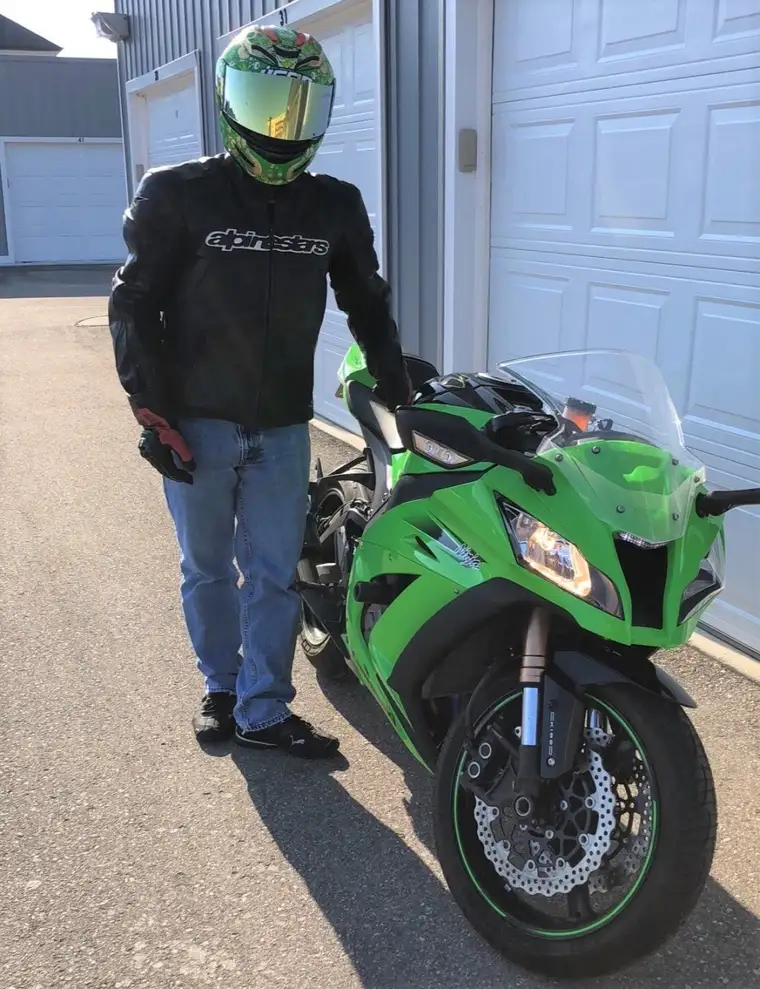
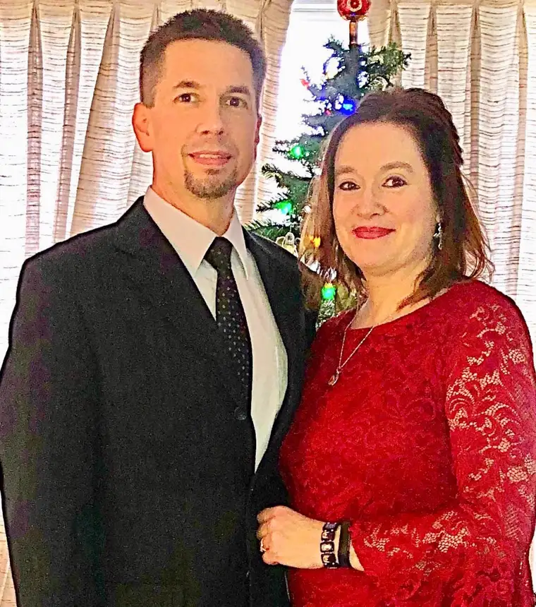

BEAUTIFUL 2011 KAWASAKI ZX10R FOR SALE:
POWER COMMANDER, TRACTION CONTROL
ABS, 8000 MILES, 200 HP
0-60 IN 2.5 SECONDS
$7500 FIRM, NO TRADES

I don’t want to sell my bike. I love riding that bike. I believe it is the closest a human being can feel like they are flying without actually flying. It’s a gorgeous bike. I smile when I look at it and I smile when I think about riding it. I’m gonna miss riding it.
If you are truly just interested in buying the bike, I suggest you skip to the end or reach me here or through a Facebook message. I kind of feel like explaining why I’m selling it first…
In October 2017, I had a bit of a fever I couldn’t get rid of. No big deal, I didn’t miss any work, I just couldn’t shake it. So, I decided to go to the walk-in clinic after a few days of this persistent annoyance. I sneak over before work and get right in. As you probably know, one of the first things the doctor typically does is listen to your heart. There I am fully clothed, with a nice comfy sweatshirt on over my work shirt as the doctor puts his stethoscope on my chest to take a listen. “You have a heart murmur.” He said. I thought to myself , “So do a lot of people, my sister has a heart murmur, can I get some antibiotics so I can go to work please?” He went on. “You should have your doctor listen to it.” I was still really thinking he’s blowing this out of proportion, but I agreed to have someone else hear it.
At this point in time, I didn’t even have a primary care physician. I hadn’t been to see a doctor in probably 10 years. So, I had to find one. Dr. Charlene Card MD was the doctor I decided on. I made the appointment for the following Monday. I went to the appointment with maybe a little apprehension, but really, I thought “This is no big deal.”
Dr. Card entered the examination room and we met for the very first time. I would come to know in time that she is a very good doctor and a very nice person as well. I got lucky when I chose her. With a little sense of Déjà vu, I sat on her little exam table, fully clothed, autumn sweatshirt attire over work shirt as she had her listen. She listened for about 3 seconds and looked a me and literally said, “Your mitral valve is leaking, and you are going to have to have it replaced.” I don’t remember what I said, but I thought “Crap, is this really happening?” The doctor then obviously started the ball rolling. She ordered an echo-cardiogram, EKG, and various other heart tests.
This really is happening. Okay, now I’m getting nervous.
A few days later I had my echo. It was interesting. I could see the chambers of my heart. I could see valves opening and closing. It was kind of like looking at the weather radar map with blue and red colors moving about. The technician finished up and informed me that he would send the test results to the cardiologist on call who would read the test, write his report, and send it to Dr. Card. “It could take up to a week to hear from your doctor,” he informed me.
I returned to work. A couple of hours later, maybe three, my phone rang. At this point in my journey, I recognize when the number on my caller id is from my doctor’s office. It was that number. I answered in my typical manner on my work cell “This is Troy.” The voice on the other end responded, “Hi Troy, this is Doctor Card, how are you?” I said, “I think you are about to tell me.” And she did. She said that the test results were as she had anticipated and that she needed to refer them on to a cardiologist and a surgeon. Remember, I’m at work. I went to my office and shut the door for a couple of minutes. This was difficult to hear, really scary, and I had to call my wife and tell her.
After many more tests, and going from having no doctor, I now have a primary care physician, a cardiologist, and a heart surgeon. Surgery was scheduled for 7 a.m., December 6, 2017.
The night before surgery, you are supposed to take a shower and use this special super-duper soap they give you. It’s from Ecolab. I see that name on the boards when I watch the Minnesota Wild play. I think of it every time I see it now. Anyway, if you don’t know me personally, I’m a little guy. 5’6”, 145 lbs. They said use half the bottle the night before and the rest when you get up in the morning before surgery. That was a lot of soap for me. It has a distinct scent. I can still smell it. I was really, really clean.
We went to the new hospital here in Fargo for the surgery. My wife and I arrived on time and they took us back to a room and had me get into a gown and hop into the bed and wait for them to wheel me away. My parents were in town for the festivities. They showed up as well as our two daughters at the hospital to send me off with prayers, hugs and kisses. I remember feeling okay, obviously a little apprehensive, but mostly a sense of surrender. I couldn’t do anything about the situation. I was just going with the flow. I remember wondering if I would see any of them again. Hoping I would, I said “See you on the flip side,” as they wheeled me off down the hall…
The operating room was cold. There were a lot of people in there. It was busy. They brought me over to the operating table and transferred me onto it. It seemed small. I’m small; that was weird. The anesthesiologist came over to me and said she was going to take care of me and everything was going to be okay. The last thing I remember is her working on my neck on the right side. She let me know she was going to begin putting me under…
Six hours later, I did wake up. I did see those people again. I was alive. I was intubated and my chest hurt. I was foggy and at this point do not know if the surgeon was able to repair my valve or if she had to replace it. I couldn’t really communicate due to the tube down my throat.
My surgeon, Dr. Roxanne Newman, came into my room a few minutes later. She would let me know how things went. She started by saying, “Well, you certainly got our attention. As soon as we opened up your chest and the air hit your organs, you flat-lined. I’ve never seen that before. I had to massage your heart for two or three minutes to get it started.” Wow. Great. Anyway, she informed me that she was able to make a repair rather than having to replace the valve. It took six hours rather than the anticipated three, due to the fact that she was unhappy with the results after her first two attempts. She is awesome. One of the very best in the country I hear. I am truly lucky to have her as my surgeon.
Now the fun begins. I remember telling my family that I had the easy part as far as the surgery goes. I’ll be sleeping and I will either wake up or I won’t. The hard part definitely begins if you wake up.
Back to my room in the ICU. Someone came by shortly to remove the tube down my throat. I remember her pulling it out and setting this bloody tube on my chest. Gross. But I could talk. My throat was scratchy. They won’t let me drink water, but I tricked them, I got some ice. Lots of ice.
In the ICU, you don’t get a lot of peace and quiet. Someone is checking in on you constantly. Monitoring your blood pressure, asking if you’d like some ice, asking if you need any more pain meds, etc. I think they woke me up every hour on the hour to do some test or give me some pills or just earn their title as someone who works in the Intensive Care Unit. It was intense.
My chest hurt. It felt like I got into a fight with a chainsaw and I lost. It hurt to breathe, it really hurt to cough, it really hurt when I got the hiccups. I had a little heart-shaped pillow that they gave me to squeeze tightly for coughs and hiccups. That was no fun, and that pain was not going anywhere any time soon.
Then there is the ever-present Incentive Spirometer. I hated that thing. I was no good at it at all immediately following surgery. To keep your lungs healthy and to teach you how to take good deep breaths, they make you breathe into that and hold your breath as long as you can frequently following surgery. It was humiliating and frustrating to see how lousy I was at it. And my chest hurt.
One little known fun fact of open-heart surgery is that you wake up with two clear tubes inserted into your thoracic cavity that are used to drain blood and other fluids out of your chest following the surgery. Apparently, they drain into a pan or something under your bed. Luckily, I never saw that. They look like the condensate drain line that runs from your furnace to the floor drain.
I was a little apprehensive about their removal. I don’t remember it hurting all that much. I remember feeling pressure as they were simply pulled out. The biggest memory of this incident was the sound. It sounded just like when your boot gets stuck in some mud and there is that suction sound. Gross. But hey, one more scary thing checked off the list.
Next, the catheter came out. Again, I was a little worried about this but, I wanted it out. So, the nurse comes in and lets me know he is going to remove it. Here we go. He counted to three, and literally with the same technique he must use to start his lawn mower, he pulled it out. Burned a bit, but I was still alive.
I was making progress. With every tube that was removed, I was closer to standing up, taking a walk, sitting in a chair.
I was having a bit of an issue with really low blood pressure following the surgery. The nurses and doctors were all commenting on it. Not too worrisome, but it was low. So, when they asked me to try to stand up for the first time it didn’t go as well as anyone had hoped. I remember just getting into position to try to stand up. With brand new, stainless steel twist ties holding my sternum together, they told me to lay on my side. That hurt. Then, once on my side, I was told to put my legs over the edge of the bed, and try to move straight up into a sitting position. That hurt. I rested a bit and tried to stand. I stood, I fainted. Apparently, everybody freaked out. I was sleeping again and missed all the excitement. I think my blood pressure was too low for this little experiment.
When I regained consciousness, there were a lot of people in the room. My wife was pretty scared. I was kind of embarrassed. But hey, once again, I’m alive, its fine.
I was obviously able to ultimately stand, sit in the chair next to the bed, and take little walks. I remember my first trip to the bathroom in my room. It literally took about 7 steps from my bed to the inside of the bathroom. The first time I did that, I had to lean on the wall and was panting for air when I arrived. This was new territory. I couldn’t believe how much energy it took to do the simplest things.
After a few days, I was moved from the ICU to a regular hospital room. More progress. Now my goals were taking walks, being able to shower on my own, and going to the bathroom. Number two. I couldn’t go home until I proved that I could do that. With my chest pain, I was wondering if I was going to be able to clean up after such an act. As it turned out, that was not an issue. Thank goodness.
I was getting closer to discharge. I was able to take slightly longer walks, now even without the assistance of pushing a wheel chair in front of me for stability. During all of this, I still had the port in my neck that was used to administer the general anesthesia. A nurse came by to remove this. I remember watching the Vikings lose to the Carolina Panthers during this little procedure. Apparently, it was inserted into my aorta. I had no idea, but it was quite long as she pulled it out. It was like a giant insect that had inserted its stinger into me. Weird. I was given strict instructions to not move for 30 minutes. That’s why I remember the Vikings losing, I couldn’t change the channel. I was a prisoner to their ineptitude. One more apparatus removed, more progress, closer to home.
One of the last things that had to be done prior to my discharge was the removal of little electrical wires that had been attached to my heart during surgery. I didn’t even know they were there. They were cleverly hidden under a horizontally placed bandage across my stomach. I obviously had the vertical bandage covering the incision in my chest, but had no idea what the other one was for. Now I knew. The physician’s assistant came in and calmly said, “I need to remove wires from you heart.” What?! This turned out to really be no big deal, but I simply had no idea this was going to happen. He had me take a deep breath and hold it as he slowly pulled out a few tiny little electrical wires that were in place just in case they needed to shock my heart apparently. Again, it didn’t hurt, but I could feel the pressure as they slowly slid through my body and onto a pile on my stomach. Ick.
I survived and got to go home. In all, I was in the hospital for six days.
This past August, when I turned 50, I decided I should probably start seeing a doctor on an annual basis. In December, I made an appointment to see Dr. Card for an annual check-up. As I sat on her little examination table fully clothed once again with a warm thick sweatshirt on, she placed her stethoscope on my chest, listened for a few seconds, and said, “Your heart murmur is back.” I think I said, “You’re kidding!” She said, “No. I am going to order and echo-cardiogram.” Now I am speechless. Shaking my head in disbelief, we finish the checkup and make arrangements for the test. As part of the annual exam a round of blood work was completed. Those results came in and Dr. Card called me the next day and explained that I am anemic. She said the echo is going to be moved up immediately and I need to see a hematologist.
Now I have another doctor. Dr. Zahr is my hematologist. He is the one who is trying to determine the cause of and the remedy for my anemia. He prescribed a literal fistful of pills including prednisone, folic acid, omeprazole, sulfamethoxazole, valacyclovir, and one simply called Rituxan. I would soon come to realize Rituxan is not a pill but technically chemotherapy that is administered through an infusion. I have now had three infusions with very little positive results. It is looking more and more like the likely cause for the anemia is actually my repaired valve.

I met with my cardiologist, Dr. Wynne, last Friday. He reviewed my labs, listened to my heart, answered my questions, and ordered more tests. He basically said I am headed for another open-heart surgery. This time to replace – rather than just repair – the mitral valve.
One of the last questions I asked was simply this: “If it were you or one of your children, and you were going to be on blood thinners the rest of your life, would you sell or have your child sell their motorcycle?” He looked me in the eye and said, without hesitation, “Yes.”
So that’s why I’m selling my beautiful 2011 1000cc Kawasaki Ninja. I don’t want to. Doctor’s orders. I don’t really feel like bickering over price at this point. If you are interested, you can reach me here through my wife’s blog. Sorry for the lengthy explanation, but I felt I needed to get it off my chest.
We are happily accepting all prayers and well-wishes as we go down this all-too-familiar road once again. I could hardly believe it happened the first time, and now, knowing what we know now, we have to do it again.
God is good, His will be done not mine. Jesus, help me bear my cross with hope, strength, courage, and dignity.
TJ
